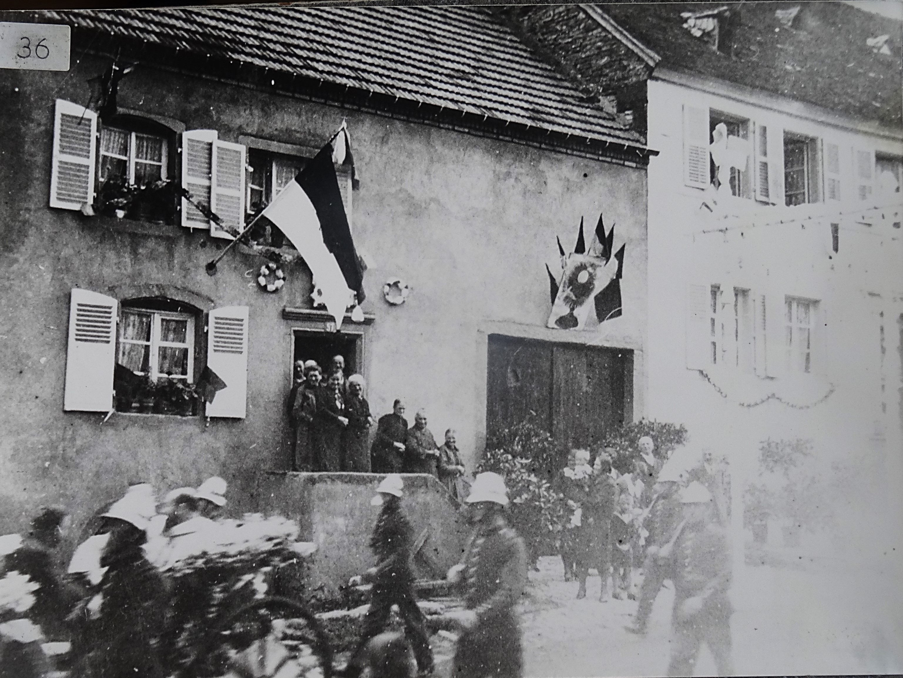
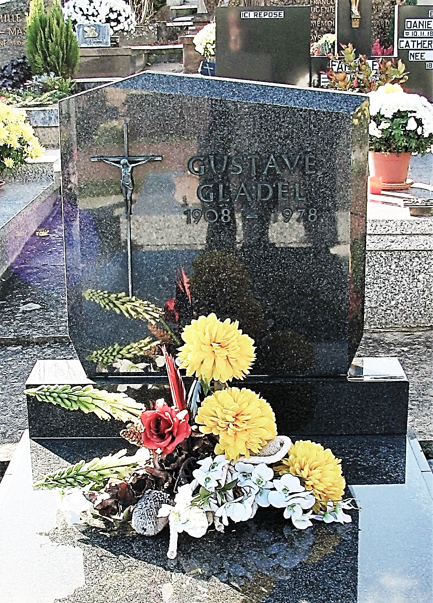

La petite fille à la recherche de ses racines …
C’est une petite fille très mature et volontaire pour son âge (13 ans), qui a pris l’initiative d’écrire sur le site internet de Rouhling, afin d’avoir des renseignements au sujet de son arrière-grand-père.
Dans le courrier qu’elle a adressé, elle précise que c’est pour faire une surprise à sa grand-mère, mais peut-être a-t-elle également besoin de connaitre ses ancêtres pour se construire une personnalité.
Courrier de l’adolescente.
Je m'appelle Sarah, j'ai treize ans et je vis en Autriche. Je vous écris car mon arrière-grand-père, qui s'appelait Gustave GLADEL, est né à Rouhling et je n'ai aucune information sur ma famille.
Malheureusement, il a quitté la famille de ma grand-mère quand elle avait neuf mois et j'aimerais faire plaisir à ma grand-mère.
J'ai donc commencé à chercher, mais je ne connais que les dates de naissance, de décès et le nom de mon arrière-grand-père. Malheureusement, ma grand-mère n'a jamais rencontré son père. Elle avait beaucoup de questions, mais sa mère, mon arrière-grand-mère, n'y a jamais répondu. Elle se pose encore très souvent ces questions, mais maintenant elle a accepté qu'elle n'obtiendra jamais les réponses.
Je suis moi-même très intéressée par ma famille et je voulais donc vous demander si vous pouviez m'envoyer des informations. Si vous avez peut-être, même des photos de lui et les noms de ses parents, que vous pourriez m'envoyer, je serais très heureuse.
Avant d’envoyer des informations généalogiques à la jeune fille et pour respecter la législation, il fallait que sa demande soit appuyée par son représentant légal. Pour donner suite à cette demande, c’est sa mère qui fut mon interlocutrice.
Courrier de Johanna, mère de Sarah, après l’envoi de mes recherches.
Ma fille Sarah s'intéresse beaucoup aux recherches généalogiques et au fait que ma mère n’a jamais rencontré son père. Sarah a souvent entendu des histoires sur la situation familiale de sa grand-mère et a voulu lui offrir pour son anniversaire, un cadeau sous forme d'informations sur sa famille.
C’est la raison, pour laquelle je voulais vous remercier pour les recherches que vous avez effectuées et pour la quantité d'informations que vous avez pu trouver.
Résumé de la vie de son arrière-grand-père
Gustave GLADEL (1908-1978)
Fils de Philippe GLADEL (1879-1954) et de Marie PHILIPPE (1880-1970).
Né le 31/01/1908 à Rouhling – Décédé le 18/12/1978 à Novéant-sur-Moselle.
Pour se préparer à son sacerdoce il fit ses études en Alsace, d’abord au petit séminaire et ensuite au grand séminaire pour ses études supérieures : Théologie, etc….
Puis, il souhaita rejoindre la Mission à Tunis (Tunisie), où il sera ordonné prêtre en 1936. Missionnaire en Afrique il a été surnommé le Père Blanc.
Ayant contracté la malaria en Afrique, il revint en France pour se faire soigner. Etant proche de sa paroisse natale, il officia à plusieurs reprises à l’église de Rouhling et de paroles de paroissiens, « ses prêches étaient fort appréciés ».
Lors du conflit 1939/1945, Gustave GLADEL, possédant une très bonne instruction et maîtrisant plusieurs langues, fut enrôlé par l’armée Allemande comme interprète.
En 1945, il fit une demande auprès de l’évêché de Metz afin de pouvoir officier en tant que curé dans une paroisse. A cette époque, l’évêque Joseph Jean HEINTZ (1938-1958), venait de réintégrer l’évêché, après avoir été évincé par l’occupant Allemand en 1940.
Ce fut un refus ! La raison évoquée et qu’il y avait trop de prêtres et pas assez de paroisses. De plus son ordination n’a pas été validée, car elle avait été effectuée en Tunisie.
N’ayant pas de paroisse, il se consacra à l’enseignement au collège Sainte-Marie de Sierck-les-Bains (57). C’est là, en 1945, que ses neveux, Albert (1930-) et Herbert (1931-2012), vinrent lui rendre visite.
Est-ce que cette déception de ne pas pouvoir se consacrer à la voie religieuse qu’il s’était tracée, a remis en question son sacerdoce ? C’est dans cette ville qu’il connut, celle qui deviendra son épouse.
Au bout de presque 14 ans de sacerdoce, Il démissionna, pour épouser Monique GROSBOIS en 1949 à Choisy-le-Roi.

Ils eurent deux enfants, Patrice né à Saint-Dié en 1951 et Anne Eve, née à Paris en 1957, où Gustave avait un emploi administratif.
Comme pour son sacerdoce, c’est après environ 14 ans de vie commune que le couple se sépara en 1963. A la suite de ces évènements, son épouse alla s’installer à Dijon avec ses deux enfants.
Gustave revint dans sa région natale et habita à 3 km de Rouhling, en Allemagne à Kleinbliedersdorf, où résidait sa cousine, Friedel, qui s’est bien occupé de lui. Grâce à ses nombreuses compétences, il trouva facilement un emploi au Consulat de France à Sarrebruck.
Après sa retraite, en 1975, il tomba malade et dû se faire amputer d’une jambe à l’hôpital de Sarreguemines. C’est à partir de ce moment-là qu’il rejoignit la Maison des Infirmes de Novéant-sur-Moselle (57), où il y décéda le 18/12/1978.
Courrier de la grand-mère Anne Eve, après avoir reçu le cadeau de sa petite fille Sarah.
Cher monsieur Lehmann,
J'ai reçu pour mon anniversaire toutes les recherches, que vous avez effectuées sur la famille GLADEL. J'ai été très impressionnée par votre travail et mon arbre généalogique dont je savais qu'il remontait loin mais sans tous ces détails et tous ces noms qui contribuent à mes racines. J'ai été très émue par le geste de ma petite-fille, Sarah, très forte et très mature, qui a pris l'initiative de contacter la mairie de Rouhling.
Je ne veux pas vous importuner mais je voulais vous demander si je pourrais vous téléphoner ou vous rencontrer, car j'aimerais bien bavarder avec vous.
Nota : Afin de respecter la loi des droits et liberté sur la protection des données, aucune divulgation d’informations n’a été fournie sans le consentement de la famille.
Raymond LEHMANN

